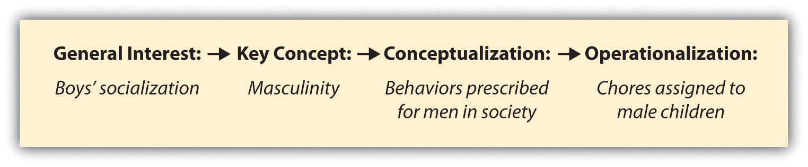

Now that we have figured out how to define, or conceptualize, our terms we’ll need to think about operationalizing them. OperationalizationThe process by which we spell out precisely how a concept will be measured. is the process by which we spell out precisely how a concept will be measured. It involves identifying the specific research procedures we will use to gather data about our concepts. This of course requires that one know what research method(s) he or she will employ to learn about her or his concepts, and we’ll examine specific research methods in Chapter 8 "Survey Research: A Quantitative Technique" through Chapter 12 "Other Methods of Data Collection and Analysis". For now, let’s take a broad look at how operationalization works. We can then revisit how this process works when we examine specific methods of data collection in later chapters.
Operationalization works by identifying specific indicatorsEmpirical observations taken to represent the ideas that we are interested in studying. that will be taken to represent the ideas that we are interested in studying. If, for example, we are interested in studying masculinity, indicators for that concept might include some of the social roles prescribed to men in society such as breadwinning or fatherhood. Being a breadwinner or a father might therefore be considered indicators of a person’s masculinity. The extent to which a man fulfills either, or both, of these roles might be understood as clues (or indicators) about the extent to which he is viewed as masculine.
Let’s look at another example of indicators. Each day, Gallup researchers poll 1,000 randomly selected Americans to ask them about their well-being. To measure well-being, Gallup asks these people to respond to questions covering six broad areas: physical health, emotional health, work environment, life evaluation, healthy behaviors, and access to basic necessities. Gallup uses these six factors as indicators of the concept that they are really interested in: well-being (http://www.gallup.com/poll/123215/Gallup-Healthways-Index.aspx).
Identifying indicators can be even simpler than the examples described thus far. What are the possible indicators of the concept of gender? Most of us would probably agree that “woman” and “man” are both reasonable indicators of gender, and if you’re a sociologist of gender, like me, you might also add an indicator of “other” to the list. Political party is another relatively easy concept for which to identify indicators. In the United States, likely indicators include Democrat and Republican and, depending on your research interest, you may include additional indicators such as Independent, Green, or Libertarian as well. Age and birthplace are additional examples of concepts for which identifying indicators is a relatively simple process. What concepts are of interest to you, and what are the possible indictors of those concepts?
We have now considered a few examples of concepts and their indicators but it is important that we don’t make the process of coming up with indicators too arbitrary or casual. One way to avoid taking an overly casual approach in identifying indicators, as described previously, is to turn to prior theoretical and empirical work in your area. Theories will point you in the direction of relevant concepts and possible indicators; empirical work will give you some very specific examples of how the important concepts in an area have been measured in the past and what sorts of indicators have been used. Perhaps it makes sense to use the same indicators as researchers who have come before you. On the other hand, perhaps you notice some possible weaknesses in measures that have been used in the past that your own methodological approach will enable you to overcome. Speaking of your methodological approach, another very important thing to think about when deciding on indicators and how you will measure your key concepts is the strategy you will use for data collection. A survey implies one way of measuring concepts, while field research implies a quite different way of measuring concepts. Your data-collection strategy will play a major role in shaping how you operationalize your concepts.
Moving from identifying concepts to conceptualizing them and then to operationalizing them is a matter of increasing specificity. You begin with a general interest, identify a few concepts that are essential for studying that interest, work to define those concepts, and then spell out precisely how you will measure those concepts. Your focus becomes narrower as you move from a general interest to operationalization. The process looks something like that depicted in Figure 6.7 "The Process of Measurement". Here, the researcher moves from a broader level of focus to a more narrow focus. The example provided in italics in the figure indicates what this process might look like for a researcher interested in studying the socialization of boys into their roles as men.
Figure 6.7 The Process of Measurement
One point not yet mentioned is that while the measurement process often works as outlined in Figure 6.7 "The Process of Measurement", it doesn’t necessarily always have to work out that way. What if your interest is in discovering how people define the same concept differently? If that’s the case, you probably begin the measurement process the same way as outlined earlier, by having some general interest and identifying key concepts related to that interest. You might even have some working definitions of the concepts you wish to measure. And of course you’ll have some idea of how you’ll go about discovering how your concept is defined by different people. But you may not go so far as to have a clear set of indicators identified before beginning data collection, for that would defeat the purpose if your aim is to discover the variety of indicators people rely on.
Let’s consider an example of when the measurement process may not work out exactly as depicted in Figure 6.7 "The Process of Measurement". One of my early research projects (Blackstone, 2003)Blackstone, A. (2003). Racing for the cure and taking back the night: Constructing gender, politics, and public participation in women’s activist/volunteer work. PhD dissertation, Department of Sociology, University of Minnesota, Minneapolis, MN. was a study of activism in the breast cancer movement compared to activism in the antirape movement. A goal of this study was to understand what “politics” means in the context of social movement participation. I began the study with a rather open-ended understanding of the term. By observing participants to understand how they engaged in politics, I began to gain an understanding of what politics meant for these groups and individuals. I learned from my observations that politics seemed to be about power: “who has it, who wants it, and how it is given, negotiated and taken away” (Blackstone, 2007).Blackstone, A. (2007). Finding politics in the silly and the sacred: Anti-rape activism on campus. Sociological Spectrum, 27, 151–163. Specific actions, such as the awareness-raising bicycle event Ride Against Rape, seemed to be political in that they empowered survivors to see that they were not alone, and they empowered clinics (through funds raised at the event) to provide services to survivors. By taking the time to observe movement participants in action for many months, I was able to learn how politics operated in the day-to-day goings-on of social movements and in the lives of movement participants. While it was not evident at the outset of the study, my observations led me to define politics as linked to action and challenging power. In this case, I conducted observations before actually coming up with a clear definition for my key term, and certainly before identifying indicators for the term. The measurement process therefore worked more inductively than Figure 6.7 "The Process of Measurement" implies that it might.